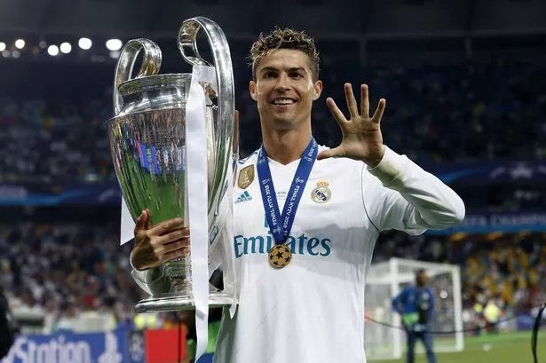
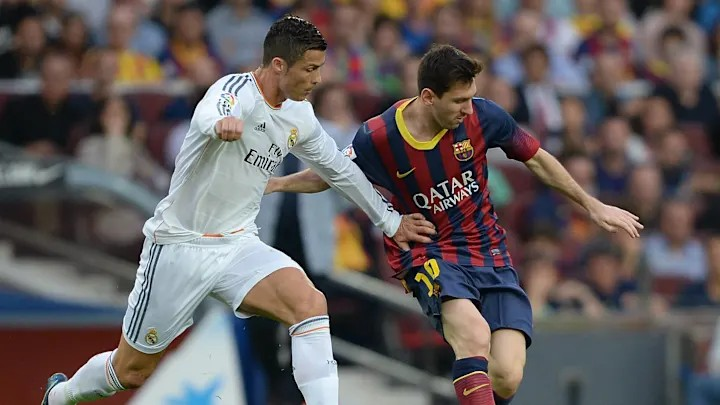

兩人在場上比拚早已成為所有球迷心中最經典的對決之一，
也時常引發雙方較極端球迷的對立，
但這也側面證明了兩人的魅力與影響力，
他們早已不只是球員，更是足球歷史的一部分。
21 世紀最廣為人知的球員就是 Leo Messi 和 Cristiano Ronaldo， 因兩人極為出眾的足球能力、以及在足壇上的統治力，被世人稱為
| Leo Messi | Cristiano Ronaldo |
|---|---|
|
|
 |
|  |
兩人在場上比拚早已成為所有球迷心中最經典的對決之一， 也時常引發雙方較極端球迷的對立， 但這也側面證明了兩人的魅力與影響力， 他們早已不只是球員，更是足球歷史的一部分。 |